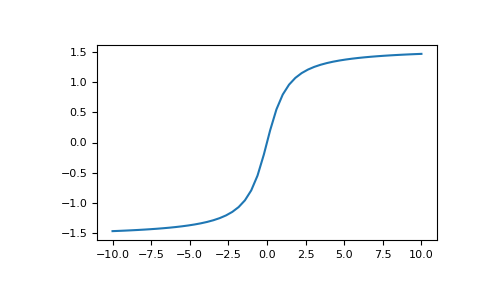

numpy.arctan¶
-
numpy.arctan(x, /, out=None, *, where=True, casting='same_kind', order='K', dtype=None, subok=True[, signature, extobj]) = <ufunc 'arctan'>¶ Trigonometric inverse tangent, element-wise.
The inverse of tan, so that if
y = tan(x)thenx = arctan(y).Parameters: x : array_like
out : ndarray, None, or tuple of ndarray and None, optional
A location into which the result is stored. If provided, it must have a shape that the inputs broadcast to. If not provided or None, a freshly-allocated array is returned. A tuple (possible only as a keyword argument) must have length equal to the number of outputs.
where : array_like, optional
Values of True indicate to calculate the ufunc at that position, values of False indicate to leave the value in the output alone.
**kwargs
For other keyword-only arguments, see the ufunc docs.
Returns: out : ndarray
Out has the same shape as x. Its real part is in
[-pi/2, pi/2](arctan(+/-inf)returns+/-pi/2). It is a scalar if x is a scalar.See also
Notes
arctanis a multi-valued function: for each x there are infinitely many numbers z such that tan(z) = x. The convention is to return the angle z whose real part lies in [-pi/2, pi/2].For real-valued input data types,
arctanalways returns real output. For each value that cannot be expressed as a real number or infinity, it yieldsnanand sets the invalid floating point error flag.For complex-valued input,
arctanis a complex analytic function that has [1j, infj] and [-1j, -infj] as branch cuts, and is continuous from the left on the former and from the right on the latter.The inverse tangent is also known as atan or tan^{-1}.
References
Abramowitz, M. and Stegun, I. A., Handbook of Mathematical Functions, 10th printing, New York: Dover, 1964, pp. 79. http://www.math.sfu.ca/~cbm/aands/
Examples
We expect the arctan of 0 to be 0, and of 1 to be pi/4:
>>> np.arctan([0, 1]) array([ 0. , 0.78539816])
>>> np.pi/4 0.78539816339744828
Plot arctan:
>>> import matplotlib.pyplot as plt >>> x = np.linspace(-10, 10) >>> plt.plot(x, np.arctan(x)) >>> plt.axis('tight') >>> plt.show()
